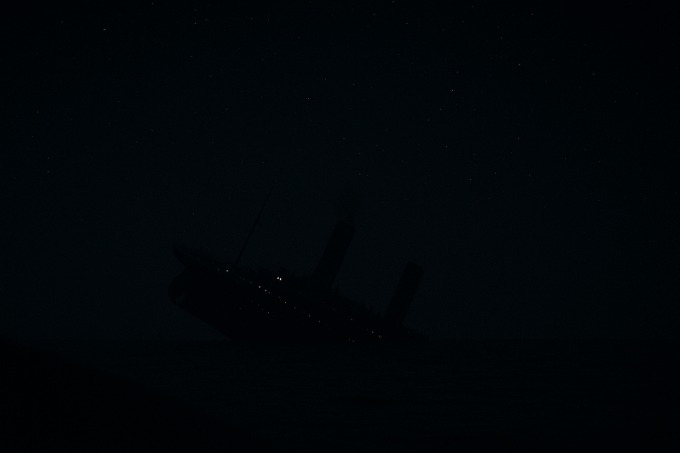
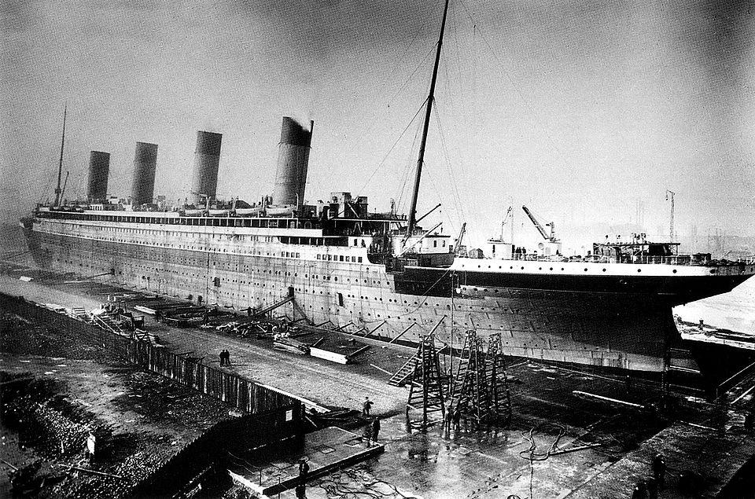
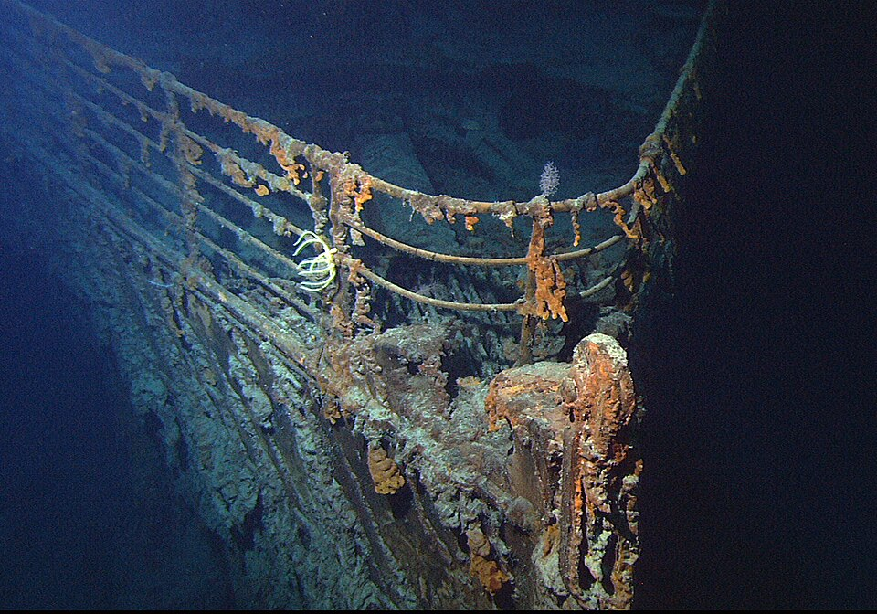

Little-Known Facts About Titanic That Will Cover Its Secret
By VinterEis

Why Titanic is Still Mistery
On the night of April 14, 1912, the most historic ship, the Titanic, sank on its first voyage. There are so many facts and mystery about its sinking, from poor preparation, small mistakes, scary night, and many other that only few people know. Here are some fascinating and little-known facts about the Titanic.
Lookouts didn't have binoculars, the key was left
Fun fact, the Titanic lookouts didn't have binoculars at all. Despite there is a place with binoculars in Titanic crow's nest, it was locked and the key was left by Second Officer David Blair who was unexpectedly transferred off the ship just before Titanic voyage. If the lookouts have the binoculars, they might noticed the iceberg earlier that might gave more time for the ship to turn.
Titanic was sank in very dark, moonless, and calm sea
The night of the sinking was exceptionally dark — much darker than it appears in the movie. Survivors described it as pitch black, with no moonlight to illuminate the surroundings. The calmness of the sea with no waves breaking against the iceberg to reveal its presence also contributed to the disaster, as it made it more difficult to spot the iceberg in time.
You might have seen in the movie that the iceberg was massive and gleaming white. But in fact, the Titanic lookouts, Frederick Fleet and Reginald Lee, saw the iceberg as a large, dark mass in the water when they first spotted it, appearing almost black and blending in with the dark, moonless surroundings.
The First Hour After the Iceberg Collision Was Calm and Confusing
When the Titanic first struck the iceberg, most passengers didn’t realize the danger. The impact felt small, and the ship seemed stable, so many people stayed in their rooms or continued socializing. Meanwhile, deep inside the ship, water was flooding through several compartments much faster than expected. Officers quickly understood that the ship would sink, but to avoid panic, they kept this information quiet at first. As a result, the first hour after the collision was marked by an eerie mix of calmness among passengers and urgent action by the crew—setting the stage for the tragedy that would soon unfold.
Titanic was the most advanced Ship in her Era
At her time, Titanic was considered the most advanced ship due to its innovative technology advanced propulsion and advanced wireless communication system, and luxurious ammenities. It also has multiple watertight compartments (16 in total) that design for the ship to be virtually unsinkable. Despite that, at least five of Titanic’s watertight compartments were breached, exceeding the ship’s design limits. This caused the bow to submerge further, allowing water to spill over into additional compartments and sealing the ship’s fate.
The water was so cold about -2 C
The Titanic night was so cold. Fun fact, if you stay in the night titanic water, most of you only survive around 15 to 45 minutes due to hypothermia. That time was a freaking cold night with ocean temperature about -2 °C. The water wasn't frozen because salt water has lower lower freezing point and ocean water has high pressure that require colder temperature to be frozen.
There was only less than half survived
There were less than half who survived the Titanic disaster. Out of more than 1,500 passengers and crew, only about 700 people made it out alive — not even half. Many lives were lost because there were not enough lifeboats on board to hold everyone. In addition, confusion and panic during the evacuation made the situation even worse, as some lifeboats were launched half-empty while hundreds of people were still waiting for help.
Many lifeboats were not full
In fact, many lifeboats that were launched early weren't full; there was still enough room for some people. This happened due to confusion, poor communication, and the crew’s uncertainty about how much weight the lifeboats could safely hold. In addition, many passengers did not realize the ship was truly sinking and were hesitant to leave the warm, brightly lit decks for small wooden boats in the dark ocean during the first hour after collision. As a result, many lives were lost that could have been saved if the boats had been filled completely.
The quote "not even God himself could sink this ship" was appear after its sank
Fun facts, the White Star Line never said "not even God himself could sink this ship", what they really claimed is that "The Titanic was designed to be unsinkable". That famous quote was an exaggeration that appeared after the sink of Titanic.
One of richest man died in Titanic
One of America's richest man, John Jacob Astor IV, died on Titanic while trying to get back to America. Astor was a well-known businessman, real estate developer, and member of one of the wealthiest families in the United States. At the time of the disaster, he was traveling back to America with his young pregnant wife, Madeleine, after spending several months in Europe. He wanted their child to be born in the United States, which is why they boarded the Titanic for its maiden voyage.
When the ship hit the iceberg, Astor helped his wife to get into a lifeboat, ensuring her safety before the vessel went down. Unfortunately, he did not manage to survive the sinking, and his body was later recovered from the icy waters. His death was one of the most notable among the many wealthy and influential passengers who perished that night.
Titanic has form of air conditioning
The Titanic was equipped with a form of air conditioning, which was a novel feature for its time. The system used a series of fans and vents to circulate cool air throughout the ship, providing a more comfortable environment for passengers.
Its rudder size was relatively too small for its size
The Titanic’s rudder was considered too small for a ship of its immense size, which greatly affected its ability to maneuver effectively, especially in emergency situations. Designed to be the largest and most luxurious ship of its time, the Titanic measured about 882 feet long and displaced more than 46,000 tons. However, its rudder was not built proportionally larger to match the enormous hull, meaning that it could not turn the ship quickly enough when faced with sudden obstacles.
This design flaw became tragically clear on the night of April 14, 1912, when the Titanic attempted to avoid an iceberg. Despite the crew’s quick reaction, the ship could not turn sharply enough to escape collision. Many experts later concluded that a larger or more advanced steering system might have improved the ship’s chances of avoiding the disaster.
Scary Sound After titanic just completely Sank
After the Titanic sank, many survivors reported hearing a series of eerie sounds coming from the ship as it went down. These sounds included the creaking of the ship's hull, the breaking of glass, and the cries of those still trapped inside. The haunting noises added to the terror of the disaster and have been recounted in numerous survivor testimonies.
Poor Preparation & Lots of Confusion
The Titanic's crew was not adequately prepared for the disaster. Many lifeboats were not filled to capacity, and there was confusion about the evacuation procedures. This lack of preparation contributed to the high number of casualties.
Many Bodies Never Recovered
After the Titanic sank, many bodies were never recovered. The icy waters of the North Atlantic made it difficult to search for victims, and the sheer scale of the disaster meant that many were simply lost at sea. This has led to a sense of closure for some families, while others have spent decades searching for answers about their loved ones.
The band really did keep playing
Just like in the movie, the band is actually really keep playing as the Titanic sinking. They did this, intending to reduce the growing sense of panic on board. Many survivors later recalled hearing the band’s music echoing through the night as people rushed to the lifeboats.
The broken into two pieces was really confirmed in 1985
Back in 1912, there was a lot of confusion about how the Titanic actually went down. Some survivors swore they saw the ship break apart, while others were just as certain it slipped beneath the waves in one piece because it was so dark. But most of them heard the terrible cracking sound. With no wreckage to examine, the official inquiries leaned toward the idea that Titanic sank whole, and the debate dragged on for decades. Some historians believe this conclusion may have been influenced, at least in part, by a desire to protect the White Star Line’s reputation.
In 1985, the wreck of the Titanic was discovered on the ocean floor, and it was confirmed that the ship had broken into two pieces upon sinking. This discovery was a significant development in understanding the disaster and put to rest many of the theories that had circulated in the decades following the sinking.
Rescuers saw hundreds of frozen bodies
In the aftermath of the Titanic disaster, rescuers reported seeing hundreds of frozen bodies in the icy waters of the North Atlantic. The frigid temperatures preserved the bodies, making recovery efforts even more challenging. Many of the victims were never identified, and their families were left to mourn without closure.
A young boy foresaw it
A 10-year-old passenger, William Carter Jr., reportedly told his mother before sailing: “Mother, the Titanic is going to sink.” His words were unsettling at the time, especially since the Titanic was widely believed to be unsinkable. The Carter family, who were first-class passengers returning home to Philadelphia after a trip to Europe, boarded the ship despite the boy’s warning. When the disaster struck on April 14, 1912, the entire family managed to survive, making his prediction all the more remarkable and haunting.
April Month is the Most Iceberg Month
April marks the peak of iceberg season in the North Atlantic Ocean. During this time, large chunks of ice break off from Greenland’s glaciers and drift south toward Newfoundland, carried by the cold Labrador Current. This makes April one of the most dangerous months for ships crossing the Atlantic.
The reason April stands out among other months is due to the combination of late-winter ice formation, melting seasonal temperatures, and strong ocean currents. As spring begins, slightly warmer air causes the edges of glaciers to crack and release large icebergs, while cold northern winds and the Labrador Current continue to push them south. This creates the perfect conditions for a high concentration of icebergs to appear in areas frequently used by transatlantic vessels.
This pattern played a key role in the sinking of the Titanic in April 1912, when the ship struck an iceberg during peak season. After the tragedy, the International Ice Patrol was established to monitor iceberg movements and warn ships of potential dangers. Today, with advanced technology, satellite tracking, and regular patrols, ocean travel has become much safer — but April still stands as a reminder of how powerful nature can be.
The Iceberg that's believed to have sunk the Titanic

The photograph of the iceberg believed to have sunk the Titanic was taken on April 15, 1912, the morning after the disaster, by the chief steward of the German liner SS Prinz Adalbert. The ship was sailing near the area where Titanic went down when the steward noticed a large, oddly shaped iceberg with a streak of red paint along its base—possibly from Titanic’s hull. The iceberg appeared about 60 feet high and 200–400 feet long, towering above the calm North Atlantic waters.
Many historians consider this the most likely candidate for Titanic’s fateful iceberg because of its location, timing, and the red paint marks matching the ship’s anti-fouling color. However, others argue that multiple icebergs were drifting in the same region, and ocean currents and ship positions were uncertain in the chaotic aftermath. While this photograph remains the most famous and convincing image of Titanic’s possible nemesis, the iceberg’s true identity can never be confirmed with absolute certainty.
There were many icebergs in the Titanic sinking area
When RMS Carpathia was steaming at maximum speed (around 17.5 knots) to reach the Titanic survivor as quickly as possible, it encountered several icebergs in the treacherous waters. The crew had to be on high alert, and the ship narrowly avoided collisions as it navigated through the ice field at full speed.
As dawn broke, the Titanic survivors and those aboard the RMS Carpathia saw many icebergs all around, some were described as large and massive scattered over miles of sea.
Titanic's last funnel was mostly decorative
The Titanic's fourth funnel was primarily a decorative feature, designed to enhance the ship's profile and make it look more majestic. While the first three funnels were fully functional and used for smoke ventilation from the ship's engines, the fourth funnel was added for aesthetic purposes and to maintain the ship's balanced appearance, though it also served a minor role in ventilating gallery and engine rooms
Titanic wreck deteriorating quickly
The Titanic wreck is deteriorating at an alarming rate due to a combination of deep-sea pressure, temperature, and bacteria that consume the ship's iron. Experts estimate that the wreck may completely collapse within the next 20 to 50 years, leaving little trace of the once-mighty vessel.
Titanic almost got out of the way of the iceberg
In the moments leading up to the collision, the Titanic's crew made a valiant effort to avoid the iceberg. The ship's lookouts spotted the iceberg just under a minute before the impact, and the crew quickly ordered a hard-a-starboard turn and reversed the engines in an attempt to evade the massive ice formation. This last-minute maneuver may have spared the Titanic from a more catastrophic impact, but it was not enough to prevent the tragedy that unfolded.
Titanic did begin to turn, and it almost cleared the iceberg — but not quite. If the ship had turned just a few seconds earlier, or if Murdoch had kept the engines ahead instead of reversing (which reduced the rudder’s effectiveness), Titanic probably would have missed the iceberg entirely.
 Pinterest
Pinterest YouTube
YouTube